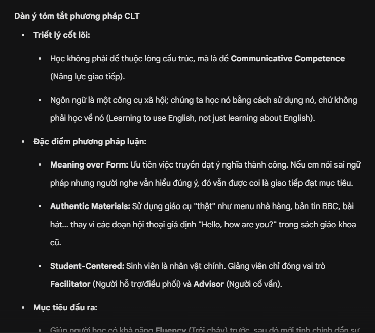
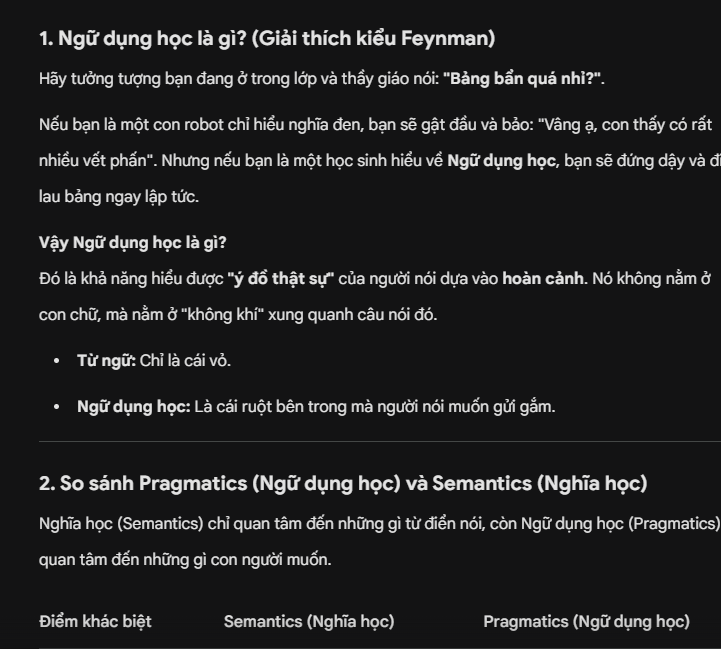
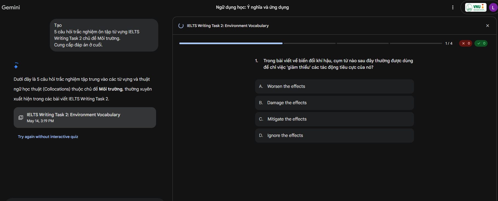

Task 03 / Portfolio học tập
Thực hành kỹ năng viết Prompt
So sánh prompt cơ bản, cải tiến và nâng cao cho ba tác vụ học tập thuộc lĩnh vực Sư phạm Tiếng Anh.
Đào Thị Mai PhươngPrompt EngineeringTESOLIELTS
Ba tác vụ học tập
- Tóm tắt bài báo về Communicative Language Teaching (CLT).
- Giải thích khái niệm Pragmatics và phân biệt với Semantics.
- Tạo bài tập từ vựng, collocation cho IELTS Writing.
So sánh các cấp độ prompt
| Tác vụ | Prompt cơ bản | Prompt nâng cao | Kết quả |
|---|---|---|---|
| Tóm tắt CLT | Yêu cầu tóm tắt chung. | Vai giảng viên TESOL, đối tượng sinh viên năm nhất, dàn ý và ví dụ lớp học. | Dễ hiểu, đúng văn phong sư phạm và dễ ghi nhớ. |
| Pragmatics | Hỏi định nghĩa. | Dùng phương pháp Feynman, bảng so sánh với Semantics và ví dụ đối chiếu. | Trực quan, giảm nhầm lẫn giữa hai khái niệm. |
| IELTS | Tạo bài tập từ vựng chung. | Vai cựu giám khảo, dùng danh sách từ đã học, câu điền từ và lỗi collocation kèm giải thích. | Bài tập được cá nhân hóa theo mục tiêu học. |
Phân tích hiệu quả
Prompt nâng cao cho kết quả tốt hơn nhờ xác định vai trò, định dạng đầu ra và ngữ cảnh cụ thể. Việc chỉ rõ đối tượng người học giúp AI chọn mức độ giải thích phù hợp; yêu cầu bảng, gạch đầu dòng hoặc giải thích từng bước giúp đầu ra dễ xử lý hơn.
Nguyên tắc rút ra
Công thức: Vai trò + Ngữ cảnh + Yêu cầu cụ thể + Định dạng kết quả.
- Chia yêu cầu thành các bước rõ ràng.
- Cung cấp ví dụ mẫu khi cần một định dạng cố định.
- Tinh chỉnh lặp lại thay vì viết lại toàn bộ prompt.
Minh chứng kết quả



Bản PDF: Báo cáo đầy đủ của Task 3.
Mở PDF báo cáo